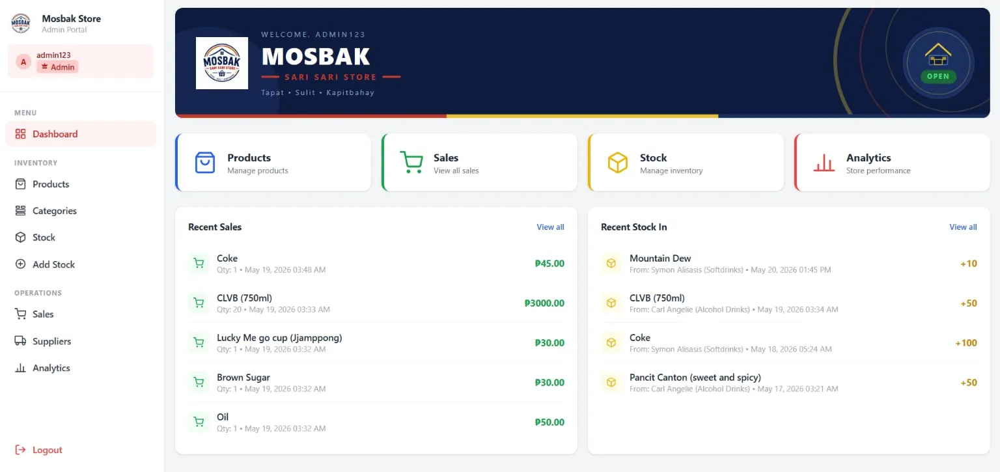
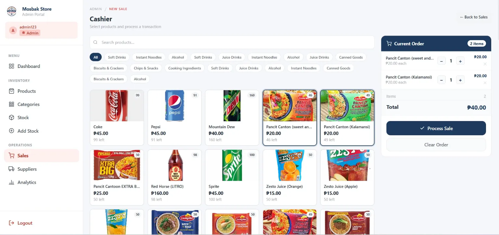

AUG 2024 — PRESENT
Bachelor of Science in Computer Science
Filamer Christian University
Developing foundations in programming, software development, algorithms, problem-solving, and data structures.
COMPUTER SCIENCE STUDENT
I'm Jan Maverick Bermejo, a Computer Science student interested in technology, programming, and problem-solving. I'm building my skills through academic work, collaboration, and hands-on learning.
01 / ABOUT ME
I’m interested in how technology and programming can turn ideas into useful solutions.
I am a Computer Science student eager to expand my technical knowledge, develop new skills, and gain practical experience. I value adaptability, teamwork, and completing tasks thoughtfully and efficiently.
Through academic projects, I have explored database development, programming exercises, and collaborative system work. I see every project as an opportunity to learn, contribute, and improve.
02 / EDUCATION
Filamer Christian University
Developing foundations in programming, software development, algorithms, problem-solving, and data structures.
03 / SKILLS
Technical foundations and collaborative strengths developed through studies and academic activities.
Frontend interface development and user-facing layouts.
Basic database development using PostgreSQL and MySQL in academic work.
Critical thinking, analysis, and willingness to learn.
Teamwork, communication, active listening, and adaptability.
Additional strengths: relationship management and negotiation skills.
04 / FEATURED PROJECT
An academic team project where I contributed to the frontend, especially the login interface.
A web-based inventory management system designed to help Mosbak Sari-Sari Store manage daily inventory operations digitally, replacing manual notebook-based tracking.
The system includes an admin dashboard and cashier workflow, with product management, sales transactions, stock monitoring, supplier records, and analytics.
Collaborated with Edison Jr. L. Brinosa and Asher Lerio.


05 / EXPERIENCE
Created a basic database using PostgreSQL, developed simple programs through class exercises, and collaborated on an inventory management system with a frontend contribution focused on the login interface.
06 / CONTACT
I'm open to learning opportunities, collaboration, and connecting with people in technology.
janmaverickbermejo18@gmail.com ↗